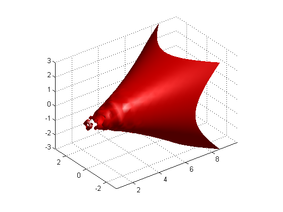
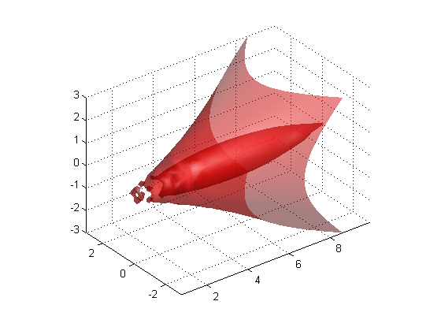
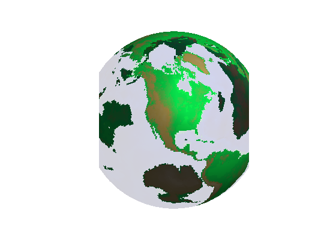

Modifying the transparency value for graphics objects reveals structure that is obscured with opaque objects. For patches and surfaces, use the FaceAlpha and EdgeAlpha properties to specify the transparency of faces and edges. The following examples illustrate this.
The FLOW function generates data for the speed profile of a submerged jet within a infinite tank. One way to visualize this data is by creating an isosurface illustrating where the rate of flow is equal to a specified value.
[x y z v] = flow; %Compute and create a patch object from data created from the isosurface with a %isosurface scalar value of -3 p = patch(isosurface(x,y,z,v,-3)); %Get the normals to the isosurface based on the gradients of v - scalar values %at the x,y,z coordinate isonormals(x,y,z,v,p); set(p,'facecolor','red','edgecolor','none'); daspect([1 1 1]); view(3); axis tight; grid on; camlight; lighting gouraud;
Adding transparency to the isosurface reveals that there is greater complexity in the fluid flow than is visible using the opaque surface. The statement alpha(.5) sets the FaceAlpha value for the isosurface face to .5.
alpha(.5)
The MAT file topo.mat has color data representing the different continents on the globe. The goal is to map this data onto the surface of a sphere.
The function SPHERE generates coordinates of a sphere. The color data is mapped onto the surface of the sphere by setting the 'cdata' property of the SURFACE object to topo (a variable holding the color data for the different continents). Note that the 'facecolor' property needs to be set to 'texturemap' if the size of the z-data is different from the size of the data in the colormap (topo) that is loaded. This way, interpolation is done to fill in the color at z-data points where the color is not specified. Under such a curcumstance, MATLAB can map the color data onto the surface, if one were to specify the facealpha transparency property to be of type 'texture'.
cla reset; load topo; [x y z] = sphere(45); s = surface(x,y,z,'facecolor','texturemap','cdata',topo); set(s,'edgecolor','none','facealpha','texture','alphadata',topo); set(s,'backfacelighting','unlit'); colormap(topomap1); alpha('direct'); alphamap([.1;1]) axis off vis3d; campos([2 13 10]); camlight; lighting gouraud;